ECON 2316 • Microeconomic Theory • Chapter 10
Perfect Competition
In Chapter 9 we wrote down a number — \$82.81/kWh — and called it the gigafactory's long-run knife-edge. This chapter asks: why that number? And once it's pinned, how many gigafactories does the world need?
Dr. Richeng Piao
Department of Economics
Northeastern University — 100 min
Learning Objectives
By the end of class today, you will be able to…
10.1
State the four conditions for perfect competition and explain why "perfect competition" is a benchmark, not a literal description. (Bloom L2)
10.2
Build market supply as the horizontal sum of firm supplies \(Q^s(p)=\sum_i q_i^*(p)\) and clear the short-run market with \(N\) fixed. (Bloom L3)
10.3
Derive the long-run free-entry equilibrium: \(p^{LR}=\min LRATC\), \(\pi=0\), and the firm count \(N^* = Q^d(p^{LR})/q^*\). (Bloom L4 — central result)
10.4
Prove the First Welfare Theorem — competitive equilibrium maximizes total surplus \(TS(Q)=\int_0^Q [P^d-P^s]\,dq\). (Bloom L5)
10.5
Contrast capital free entry (gigafactories) with biological adjustment (eggs), and show how a price floor breaks the welfare theorem. (Bloom L4)
From One Firm's Supply to the Whole Industry
Ch 9 — the single firm
- Profit-max: \(p = MC(q^*)\)
- Supply \(=\) inverse-\(MC\) above shutdown
- SR snapshot: \(p=\$84\), \(q^*=50.9\) GWh, \(\pi^*=\$58.6\)M
- CRS knife-edge: LR firm output is indeterminate at \(p=\min LRATC\)
Ch 10 — the industry
- Market supply \(=\) horizontal sum of firm supplies
- Short run: \(N\) fixed, price clears
- Long run: free entry drives \(\pi \to 0\)
- Knife-edge resolved: \(p^{LR}=\min LRATC\); \(N^*\) is the equilibrating variable
The locked \$84 was an SR snapshot; the locked \$82.81 was a firm-level derivation. Today the \$82.81 becomes an industry-equilibrium prediction: free entry pushes the global pack price down to exactly \(\min LRATC\), and the \$1.19 wedge between \$84 and \$82.81 is the slack that drives entry over the long run.
Free Entry in the Wild — The 2024–2026 Battery Shakeout
November 2024: Northvolt — Europe's flagship battery startup, \$15B from VW, Goldman, BlackRock — files for Chapter 11. Its cost ran ~\$130/kWh against a \$108 global price; its plant ran at ~5% of capacity. The board chose exit.
The same year, CATL, Stellantis-Samsung, and LG Energy broke ground on new gigafactories. Some firms entering, some exiting — same global market, same year.
This is perfect competition in the wild: capital flows in where \(\pi > 0\) and out where \(\pi < 0\), with price adjusting toward \(\min LRATC\).
\$15B
Northvolt backing — exited anyway (Nov 2024)
~5%
Skellefteå plant capacity utilization in 2024
100
GWh CATL Hungary plant (entering, 2026)
\$82.81
Where the model says price settles
Britishvolt collapsed Jan 2023; SVOLT abandoned Brandenburg May 2024; FREYR walked from a \$2.6B Georgia plant Feb 2025. The model predicts where this noisy entry/exit process settles — and the locked \$82.81 is that point.
§10.2
Four Conditions
What does it take for a market to be "perfectly competitive"?
A Market Is Perfectly Competitive If…
1. Many small firms
No firm is a non-trivial share of output, so no firm's decision moves the price.
2. Homogeneous product
Every firm's output is identical; buyers care only about price, not brand.
3. Free entry & exit
Firms enter or leave without a fixed cost beyond the capital they install or abandon.
4. Perfect information
Everyone knows every price, every cost structure, every quality.
Each is an idealization — none is literally true in any real market. Condition 1 is closest to true for Iowa corn or a single trader on the Chicago Board of Trade; Condition 2 for #2 yellow corn; Condition 3 where capital is portable; Condition 4 where prices are listed and updated.
"Free Entry" With a \$15B Price Tag?
Fair objection: a gigafactory costs billions and takes 2–4 years to build. In what sense is that free entry? Because "free" modifies barriers, not cost — it is a claim about symmetry of opportunity, not about the size of the check.
What free entry actually rules out
- Legal exclusivity — medallions, utility franchises, spectrum licenses
- Patents or proprietary tech an entrant can't replicate or license
- Incumbent-only access to inputs, distribution, or customers
A barrier is something money can't buy past. The \$15B buys capacity — a cost of producing, not a toll for the right to compete. CATL, Stellantis–Samsung, LGES, and BYD each wrote a comparable check in the same 24 months. Nobody needed a battery license.
Where the objection does bite
1. It breaks condition 1, not condition 3. When minimum efficient scale is large relative to the market, only a few firms fit — exactly why CATL holds 39.2% and HHI sits near 2,000. Price-taking is the assumption under strain.
2. Sunk capital makes exit the un-free half. Northvolt's backers recovered almost none of the \$15B. In the model exit is instantaneous; in Skellefteå the plant ran at 5% of capacity for two years before the board pulled the trigger.
Free entry and exit is a claim about the direction capital flows when \(\pi \neq 0\) — not about the speed it moves, and not about the price of a ticket.
Price-Taking, Made Formal
For an individual firm \(i\), its own output cannot move the price:
\(\displaystyle \frac{\partial p}{\partial q_i} = 0\)
This does not mean prices are constant — they move when aggregate supply or demand shifts. It means any single firm's contribution is too small to matter. The firm treats \(p\) as exogenous — exactly what let us set \(p=MC(q^*)\) in Ch 9.
Contrast (Ch 11): a monopolist has \(\partial p/\partial q < 0\), so \(MR = p + (\partial p/\partial q)q < p\). The gap is the markup; under perfect competition the markup is zero.
Heads Up 10.1
"Perfect competition" does not mean "perfect markets." The four conditions describe a limiting case, not a claim that real markets work flawlessly. The model's value is a clean prediction (\(p=\min ATC\), surplus maximized) for any market that comes close enough.
Is the battery industry "close enough"? An empirical question — but §10.5's \(N^*=50\) lands near the 30–40 gigafactories actually operating in 2025, so industry-wide quantity dynamics still track the benchmark despite CATL's 39% share.
Application 10.1 — Cocoa Futures as Canonical Price-Taking
Want a market closer to the four conditions than batteries? ICE Cocoa futures — thousands of contracts/day, many small participants, a homogeneous delivery grade, near-perfect price information.
West African drought + crop disease drove the price from ~\$4,200/ton (mid-2023) to over \$10,000/ton (Mar 2024) — a 2.4× spike in nine months — then back to ~\$3,240 by Mar 2026 as production rebounded.
No single farmer or trader moved this price: \(\partial p/\partial q_i = 0\) is closer to literal truth here than in any battery market. The chapter's machinery applies directly, without heavy qualification.
\$4.2K
Cocoa \$/ton, mid-2023
\$10K+
Peak \$/ton, March 2024
\$3.2K
\$/ton by March 2026 (rebound)
2.4×
Nine-month price swing
Shutdown, Loss-Min, and the Three Price Zones
Recall — Ch 9 §9.4. You already drilled this interactively. One slide to reload it, because the last line is what §10.3 is built on.
Zone 1 · Profit
\(p > \min ATC\)
Produce where \(p = MC\). Revenue covers every cost with room to spare — positive economic profit.
Zone 2 · Loss, Stay Open
\(\min AVC < p < \min ATC\)
Still produce where \(p = MC\). Every unit covers its variable cost and chips in on fixed cost — quasi-rents stay positive.
Zone 3 · Shut Down
\(p < \min AVC\)
Every unit loses money before fixed cost is even counted. Set \(q = 0\) — supply moves onto the price axis.
So the firm’s supply curve is the \(MC\) curve above \(\min AVC\), plus a vertical leg on the price axis below it.
That object is the §10.3 building block — next we add these curves up across firms. →
Electricity Generation Is a Competitive Market
Electricity has two very different sides. The wires are a natural monopoly (Ch 11) — but generation, where the power is actually made, is close to perfect competition.

Generators → one grid → homes. Only the first link is competitive.
Generation — many plants (coal, gas, nuclear, wind, solar) bid into a shared pool. Price-takers. ← today
Transmission — one high-voltage grid; enormous fixed cost → natural monopoly (Ch 11).
Distribution — the local wires to your home; also a regulated monopoly.
On the generation side, dozens of plants sell an identical product (a MWh is a MWh) into the same market, and no single plant moves the wholesale price — \(\partial p / \partial q_i = 0\). The grid operator dispatches plants in merit order (cheapest \(MC\) first) until demand is met, so the wholesale price equals the \(MC\) of the last plant switched on.
A Generator's Marginal-Cost Curve Is Its Supply Curve
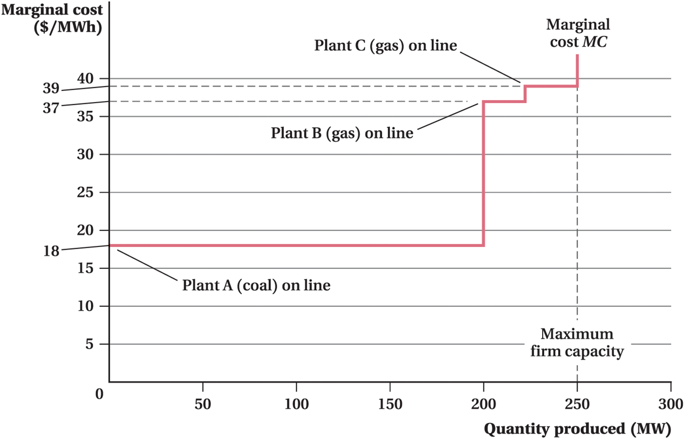
A generator runs its cheapest unit first. As the wholesale price rises, it brings costlier plants online in merit order:
- Plant A (coal) — cheapest, ~\$18/MWh; dispatched first.
- Plants B & C (gas) — costlier (~\$37, \$39/MWh); switched on only once the price clears their \(MC\).
- Maximum capacity — output can't rise further, so supply turns vertical.
The rising \(MC\) curve (above shutdown) is the firm's short-run supply curve — the §10.3 building block. Sum these step-curves across all generators and you get market supply.
§10.3
Market Supply: The Horizontal Sum
\(\displaystyle Q^s(p) = \sum_{i=1}^N q_i^*(p)\)
Industry Short-Run Supply Curve
Market (industry) supply is the horizontal sum of every firm's short-run supply curve — at each price, add up the quantities.
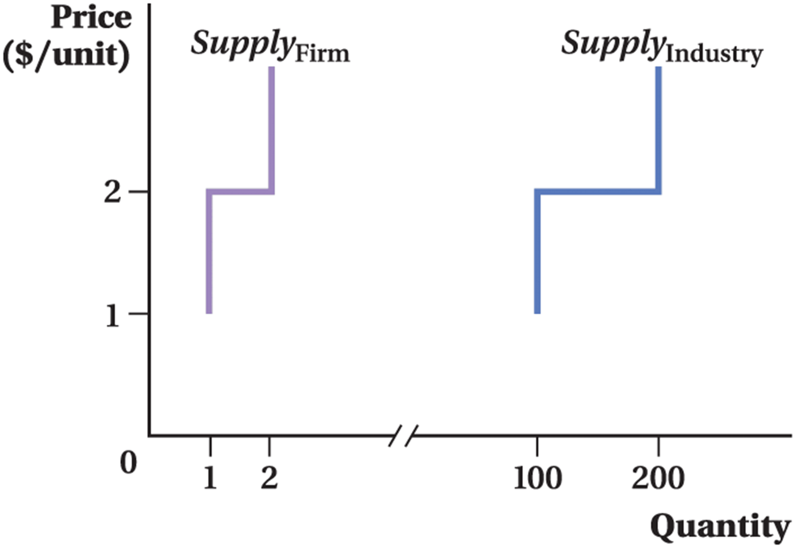
Identical firms: one firm's curve, scaled out by \(N\).
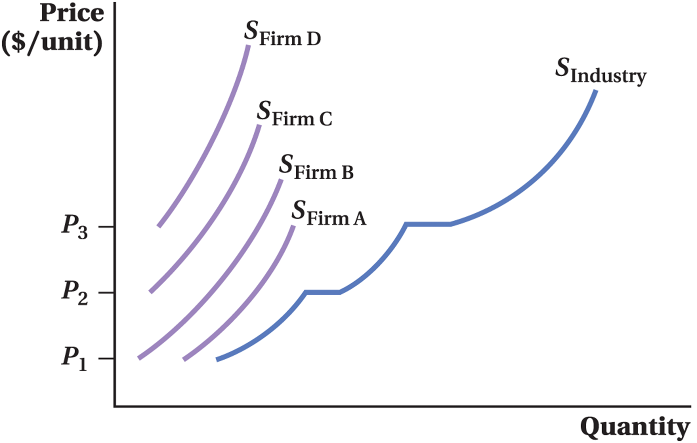
Different firms: add the curves left-to-right at each price.
Industry output rises as \(P\) rises for two reasons: (1) each operating firm's \(MC\) slopes up, so it makes more; (2) higher-cost firms cross their shutdown price and switch on.
Three Generators, Three Step-Supply Curves
Each firm's supply curve is its own merit-order staircase — cheapest plant first, stepping up as the price rises.
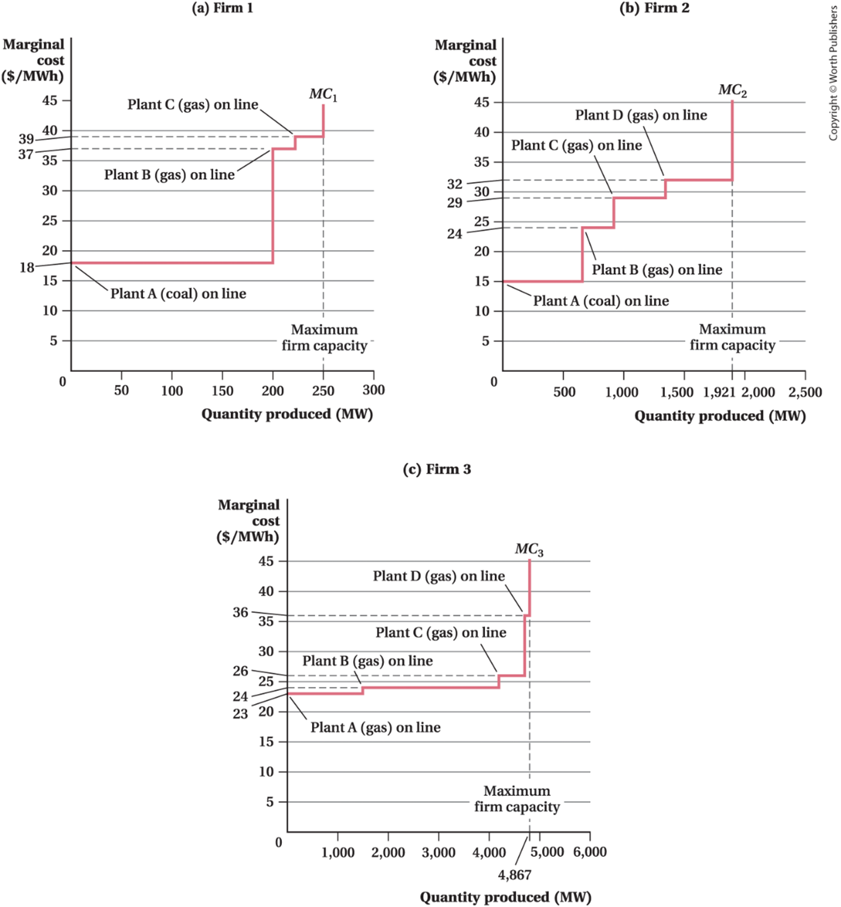
Firm 1 (a) — coal first (~\$18), then gas up to ~\$39; small 250 MW fleet.
Firm 2 (b) — cheapest coal (~\$15), so it runs first.
Firm 3 (c) — largest fleet; gas-heavy, from ~\$23.
As demand grows, the grid operator turns on the cheapest available unit next — Firm 2's coal (~\$15), then Firm 1's coal (~\$18), then Firm 3's gas (~\$23–24)… Stacking these staircases cheapest-first builds the industry supply curve.
Stacking Them All: The Industry Supply Curve
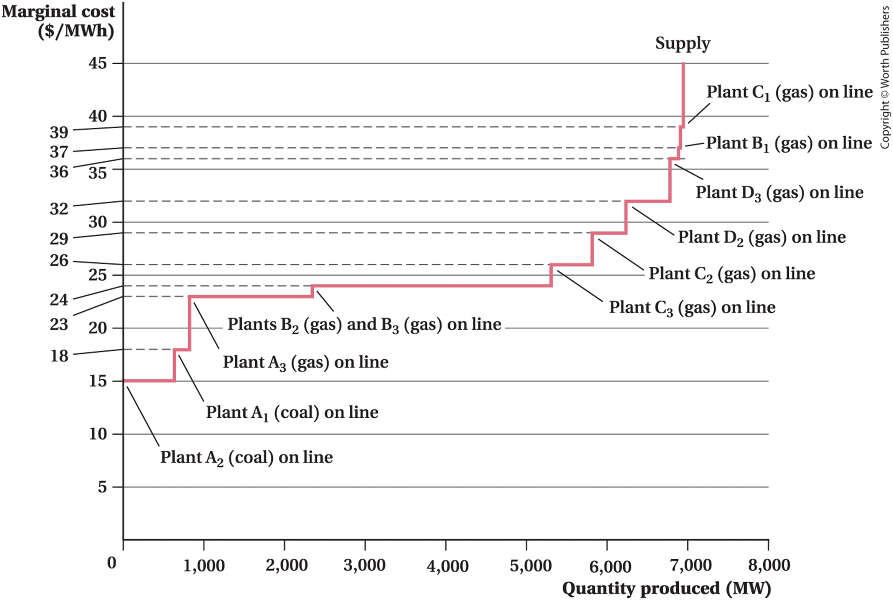
Lay every firm's supply curve end-to-end at each price and you get the industry short-run supply curve — a rising staircase from the cheapest plant's \(MC\) to the most expensive.
It slopes up for the two §10.3 reasons: each firm's \(MC\) rises, and higher-cost plants switch on as \(P\) climbs. Where this industry supply meets demand sets the market price — and every dispatched plant produces at \(p = MC\).
Add Quantities Across Firms at Each Price
Every firm faces the same price \(p\) (price-taking). What differs is the quantity each supplies. So we add along the quantity axis:
\(Q^s(p) = \sum_{i=1}^N q_i^*(p) \;\xrightarrow{\text{symmetric}}\; N\cdot q^*(p)\)
With symmetric firms, market supply is just \(N\) copies of one firm's curve, scaled horizontally. For our gigafactory cohort: \(N\) times the locked Ch 9 firm supply.
Heads Up 10.2
Sum quantities, not prices. There is no meaning in adding firm \(A\)'s \$4 shutdown price to firm \(B\)'s \$6. The price is the same for everyone; quantities are what differ.
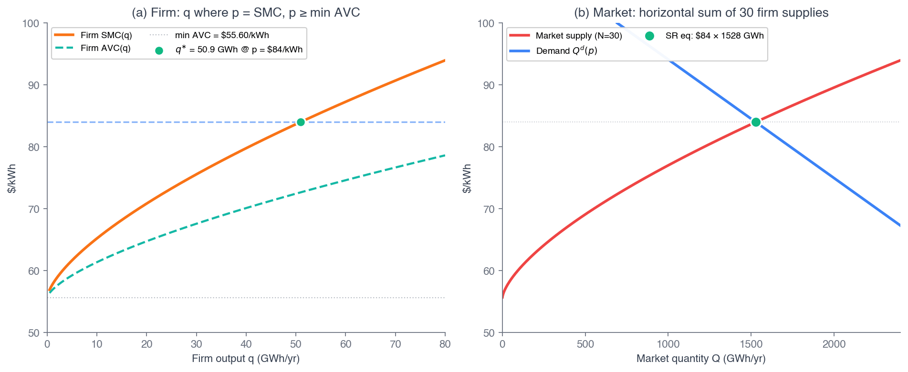
Fig 10.2 — firm supply (left) sums horizontally into market supply (right).
Calculus Corner 10.1 — The Market Elasticity Equals the Firm Elasticity
Symmetric firms, \(Q^s = N q^*(p)\). Compute the market-supply elasticity:
\[ \varepsilon^s_{\text{mkt}} = \frac{p}{Q^s}\frac{dQ^s}{dp} = \frac{p}{N q^*}\,N\frac{dq^*}{dp} = \frac{p}{q^*}\frac{dq^*}{dp} = \varepsilon^s_{\text{firm}} \]
The \(N\) cancels. Multiplying a curve by a constant doesn't change its percentage responsiveness.
For our gigafactory, the firm-supply elasticity is \(1.5\cdot p/(p-m)\). At \(p=\$84\), \(m=\$55.6\):
\(\varepsilon^s = 1.5 \cdot \dfrac{84}{84-55.6} = 1.5 \cdot \dfrac{84}{28.4} \approx 4.44\)
Same number at \(N=1\), \(N=30\), or \(N=50\). The \(1.5\) is pure technology \((\beta/(1-\beta))\); the \(p/(p-m)\) factor blows it up because output responds to the thin value-added margin \(p-m\), not to \(p\) directly.
Walkthrough 10.1 — Horizontal Sum with Heterogeneous Shutdowns
Problem. Firm \(A\): \(q_A^*(p)=2(p-4)\) for \(p\geq 4\), else 0. Firm \(B\): \(q_B^*(p)=3(p-6)\) for \(p\geq 6\), else 0. Construct market supply \(Q^s(p)\) on \([0,10]\).
Set up & solve — three regions
\(p\in[0,4)\): no firm operates. \(Q^s = 0\).
\(p\in[4,6)\): only \(A\). \(Q^s = 2(p-4) = 2p-8\).
\(p\in[6,10]\): both. \(Q^s = 2(p-4)+3(p-6) = 5p-26\).
Check the kink at \(p=6\)
From below: \(2(6)-8 = 4\). From above: \(5(6)-26 = 4\). Continuous — no jump.
But the slope jumps from 2 to 5: firm \(B\)'s output is added on once \(p\geq 6\). Market supply kinks at each firm's shutdown threshold.
Takeaway. Heterogeneous markets have piecewise supply: each kink adds the next firm. The slope is the sum of operating firms' slopes — the seed of upward-sloping long-run supply in §10.6.
Walkthrough 10.1, Graphed — A Kinked Market Supply
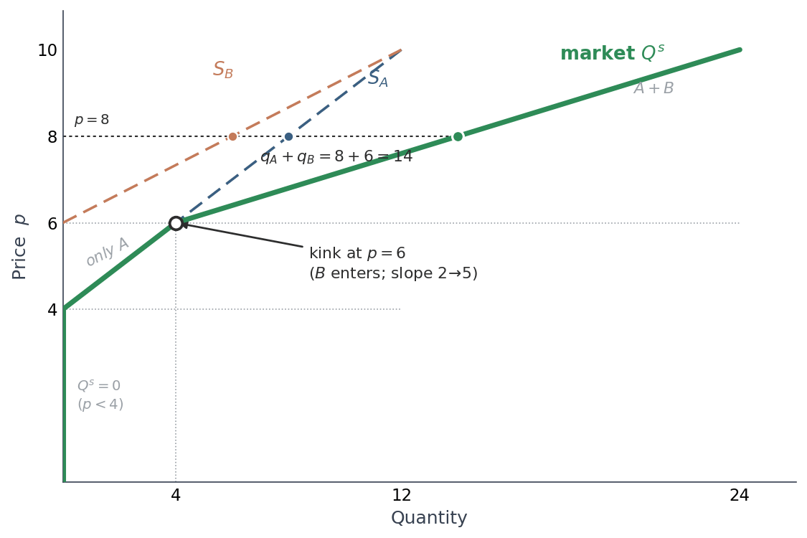
The market curve is the horizontal sum — at each price, add up the firms' quantities.
Read at \(p=8\): \(q_A=2(4)=8\) and \(q_B=3(2)=6\), so \(Q^{s}=14\).
Nothing is produced below \(p=4\). The curve kinks at \(p=6\) when \(B\) switches on — continuous (\(Q=4\) on both sides), but the slope jumps \(2\!\to\!5\).
§10.4
Short-Run Market Equilibrium
\(N\) fixed — the price does the adjusting: \(N\cdot q^*(P^*) = Q^d(P^*)\)
Entry, Exit, and the Zero-Profit Result
Picture the burger joints around campus. Watch how one news headline sets the whole market in motion:
1 · The calm
In long-run equilibrium every shop earns zero economic profit — owners just cover costs plus their next-best alternative. Nobody enters, nobody leaves.
2 · The shock
Northeastern approves a 1,370-bed dorm down the block. Overnight ~1,370 new students live next door → burger demand jumps.
3 · The signal
More demand → price rises \$8 → \$10 a burger → shops suddenly earn positive economic profit. What happens next?
The real headline (Mar 2024) — the demand shock that starts our story.
In the Short Run: Positive Economic Profit
Burger example — the campus market from the previous slide, one shop and the whole market side by side.
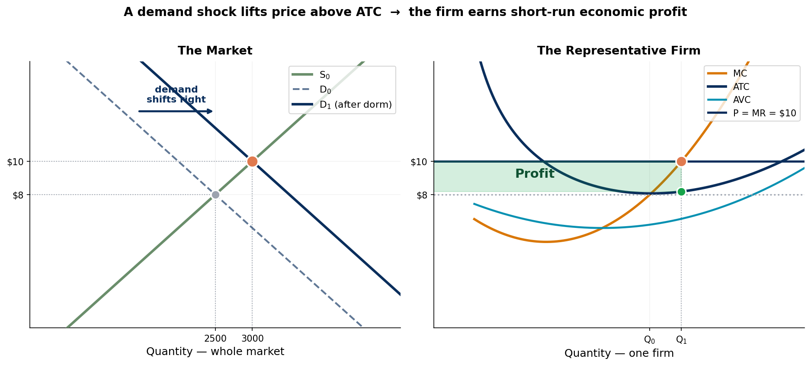
The new dorm opens → demand shifts right (D₀→D₁) → the burger price rises \$8 → \$10. Each shop slides up its \(MC\) curve to \(q_1\), and since P > ATC it pockets the shaded profit rectangle.
But with free entry, economic profit is a magnet — it lures new shops in. That’s the trigger for what happens next.
With \(N\) Fixed, Price Clears the Market
In the short run, \(N\) is exogenous — entrants are still raising capital and building. The market clears by adjusting price:
\(N\cdot q^*(P^*) = Q^d(P^*)\)
New Ch 10 lock — demand calibration
Anchor on 2025 global Li-ion demand (Benchmark Mineral Intelligence): \(Q^d(\$82.81)=1{,}590\) GWh. Two points give the linear demand:
\(Q^d(p) = 5{,}911.43 - 52.185\,p\)
Demand elasticity at \(p^{LR}\): \(\varepsilon^d = -52.185\cdot 82.81/1{,}590 \approx -2.72\). Highly elastic — cheaper packs make cheaper EVs.
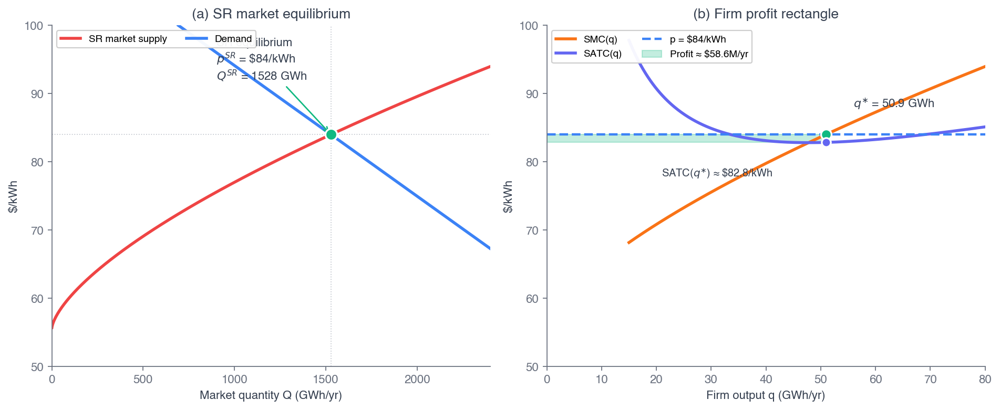
Fig 10.3 — SR equilibrium with the firm's profit rectangle.
Walkthrough 10.2 — SR Equilibrium with \(N_{SR}=30\)
Problem
30 symmetric gigafactories share the market. Find \((P^*, Q^*)\), per-firm output, and each firm's profit.
Given
\(N_{SR}=30\) · \(q^*(84)=50.93\) GWh (Ch 9 lock)
\(Q^d(p)=5{,}911.43-52.185p\)
① Industry supply
Each firm at \(p=\$84\) makes \(q^*=50.93\) GWh, so
\(Q = 30\times 50.93\)
\(= 1{,}527.9\) GWh
② Does demand agree?
\(Q^d(84) = 5{,}911.43 - 52.185(84)\)
\(= 1{,}527.9\) GWh ✓
market clears at \(P^*=\$84\)
③ Profit per firm
The Ch 9 lock: \(\pi^* = \$58.6\)M/yr — a 1.4% operating margin.
\(P^*=\$84 > p^{LR}=\$82.81\), so profit is positive.
Takeaway. At \(N_{SR}=30\) the Ch 9 snapshot is a consistent SR equilibrium, not a coincidence. The \$1.19 wedge between \$84 and the \$82.81 knife-edge is the slack that will drive entry — next.
Application 10.2 — Austin's 2017 Rideshare Re-Entry
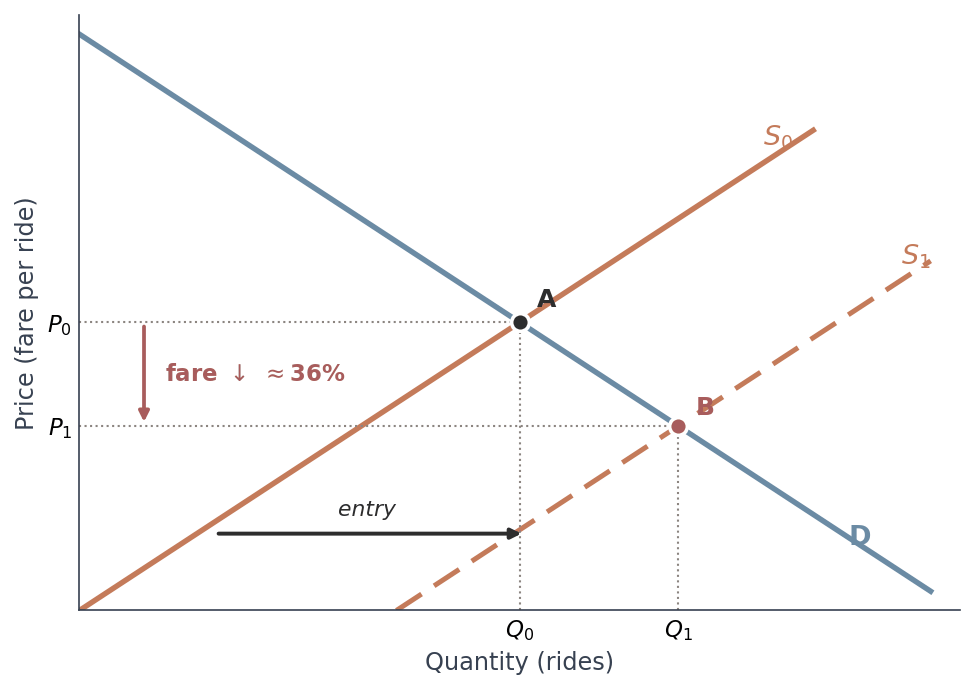
What changed. Austin held \(N\) down in 2016 — Uber and Lyft left rather than meet fingerprint rules, and small local operators filled the gap. Texas HB 100 preempted the local rules in May 2017; both returned within weeks.
Entry shifts market supply right. Equilibrium slides down the demand curve: fares fall, total rides rise — the §10.5 mechanism in miniature.
Market quantity ≠ one firm's quantity
RideAustin — the nonprofit incumbent — saw its own ridership fall 36% and cut fares about 36% to compete. That is the incumbent shrinking, not the market: on the diagram, \(Q\) moves \(Q_0\!\to\!Q_1\) up while the incumbent's slice of it gets smaller.
§10.5 — the central derivation
Long-Run Free-Entry Equilibrium
\(\pi^{LR}=0 \iff p^{LR}=\min LRATC\), and \(N^*\) absorbs demand
Entry Drives Profit to Zero
Still the burger market — that short-run \$10 profit from the dorm shock is a magnet for entry. Here is the long-run dance:
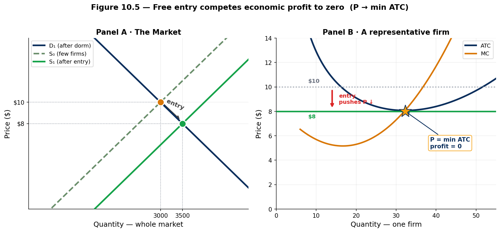
Owners see the profit → new shops open → supply shifts right → price falls → back to zero profit. Overshoot? Some exit, price rises. It settles.
In the panels: entry shifts market supply right (S₀→S₁), price falls \$10→\$8; the shop's profit rectangle shrinks to nothing at P = min ATC (gold star).
The market ends at the price where every surviving shop sits at the bottom of its ATC curve — its efficient scale.
Free Entry Drives Profit to Zero
Back to the gigafactory — same picture as the burger market, now with the Ch 9 numbers attached.
Above \(\min LRATC\), profit is positive and firms enter; below, profit is negative and firms exit. Price settles where the marginal entrant earns exactly zero:
\(\pi^{LR}=0 \iff p^{LR}=\min LRATC\)
For the gigafactory, \(\min LRATC\) was locked in Ch 9: long-run \(K\!+\!L\) marginal cost \(\$27.21\) (constant under CRS) plus materials \(m=\$55.60\):
\(\min LRATC = \$27.21 + \$55.60 = \mathbf{\$82.81}\)/kWh
Why is \(LRATC\) flat? Under constant returns to scale, doubling every input doubles output, so long-run cost is proportional to output: \(c(q)=k\,q\). Then \(LRAC=c/q=k\) and \(LRMC=dc/dq=k\) — both equal the same constant. The LR cost curves are horizontal lines, so \(\min LRATC = LRATC = \$82.81\) at every \(q\).
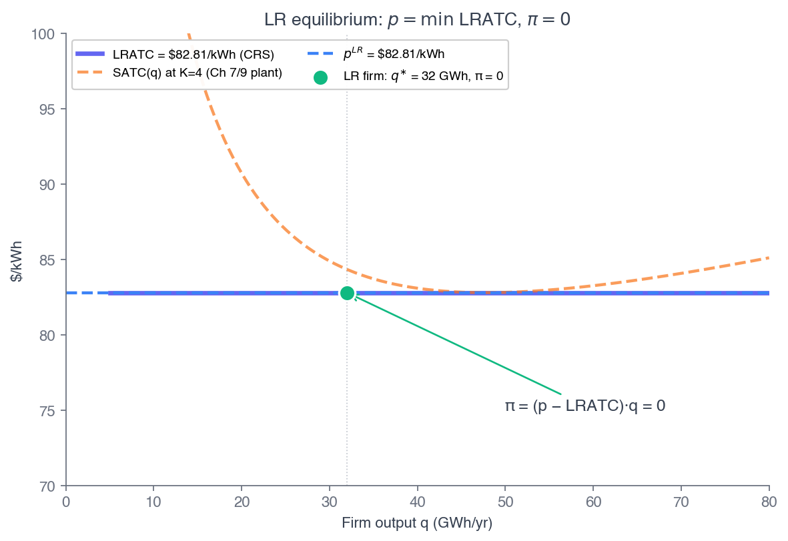
Fig 10.4 — LR equilibrium: \(p=\min LRATC\), \(\pi=0\).
Four Equalities, One Resting Point
\(p = MR\) — every firm is a price-taker, \(\partial p/\partial q_i = 0\)
\(p = MC\) — every firm is profit-maximizing — the Ch 9 FOC
\(p = \min LRATC\) — entry and exit drove profit to zero
∴ \(LRMC = LRATC\) at the firm's output
All four hold at once — and only in long-run competitive equilibrium.
Where our calibration differs
In the U-shaped picture you drew in Principles, \(LRMC\) cuts \(LRATC\) exactly at its minimum — so the fourth line pins down a unique efficient scale \(q^*\).
Under our CRS calibration \(LRATC\) is flat, so \(LRMC = LRATC = \$82.81\) at every \(q\). The equality holds everywhere, and firm output is indeterminate — Ch 9's knife-edge.
That is precisely why the next slide makes \(N^*\), not \(q^*\), the equilibrating variable.
Calculus Corner 10.2 — The Firm Count \(N^*\)
Because \(LRATC\) is flat under CRS, at \(p=\$82.81\) every output earns zero profit — so the firm's output is indeterminate (Ch 9's knife-edge). Anchor each firm at the Ch 7 plant size \(q^*=32\) GWh; demand then pins the firm count:
\[ N^* = \frac{Q^d(p^{LR})}{q^*} = \frac{5{,}911.43 - 52.185(82.81)}{32} \]
\(= \dfrac{1{,}590}{32} = 49.69 \approx \mathbf{50}\)
\(N^*\) is the equilibrating variable. If demand were 2,000 GWh, \(N^*=63\). The price doesn't move — the firm count does. This resolves Ch 9's CRS knife-edge.
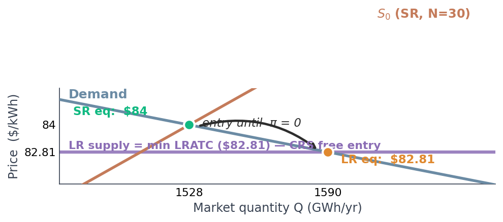
Entry shifts SR supply \(S_0\!\to\!S_1\); the new SR eq lands on the horizontal LR supply — A (\$84) → B (\$82.81), \(\pi=0\).
Walkthrough 10.3 — Now Run It on the Burger Market
Problem
Same formula, different market. Find the long-run price, market quantity, and the number of burger shops the campus market supports.
Given
\(\min LRATC = \$8\)/burger
\(Q^d(P)=5{,}500-250P\) · \(q^*=175\)/day
① Free entry pins the price
Entry continues while \(\pi > 0\), so price falls to the break-even point:
\(P^{LR} = \$8\)
② Demand at that price
\(Q^d(8) = 5{,}500 - 250(8)\)
\(= 3{,}500\) burgers/day
③ Divide by shop size
\(N^* = \dfrac{3{,}500}{175}\)
= 20 burger shops
Trace the adjustment. Before entry, 15 shops served \(Q^d(10)=3{,}000\) burgers at \$10 — 200 each, at a profit. Entry of 5 more shops drives price to \$8; per-shop output falls \(200 \to 175\) as each slides back down its \(MC\) curve, and profit lands on zero.
Takeaway. \(N^* = Q^d(\min LRATC)/q^*\) is market-agnostic — gigafactories at \$82.81 gave \(N^*=50\); burgers at \$8 give \(N^*=20\). Read the cost side, read demand at that price, divide by plant size.
Poll #1 — Demand Rises. What Adjusts?
In long-run competitive equilibrium with free entry and constant returns to scale, global battery demand rises permanently. In the new long-run equilibrium, which variable absorbs the increase?
60 sec to vote
Answer: C — the firm count \(N^*\) rises
Free entry pins \(p^{LR}=\min LRATC=\$82.81\); CRS pins per-firm output at the plant anchor \(q^*=32\) GWh. Only the firm count absorbs demand:
\( N^* = Q^d(p^{LR})/q^* \quad\Rightarrow\quad 1{,}590\to 2{,}000 \text{ GWh} \;\Rightarrow\; N^* = 50 \to 63 \)
Traps: A — price is fixed by free entry, not by demand. B — under CRS, individual firm output is indeterminate (anchored at plant size). D — CRS means constant marginal cost.
Overshoot: Even More Stores Open, Now a Loss
The profit got over-hyped — a flood of new shops.
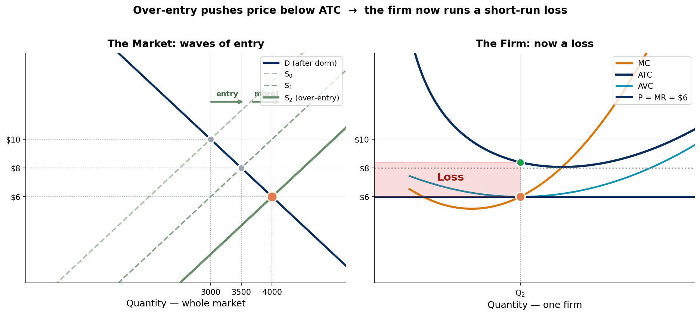
Entry overshoots: so many shops open that supply slides right past $8 all the way to $6 — below ATC. Now P < ATC, so the firm runs a loss (red box). Losses are the exit signal → some shops close → supply contracts → price climbs back to $8.
Exit Restores Zero Profit
A burger chain closes a location — a firm exits the market.
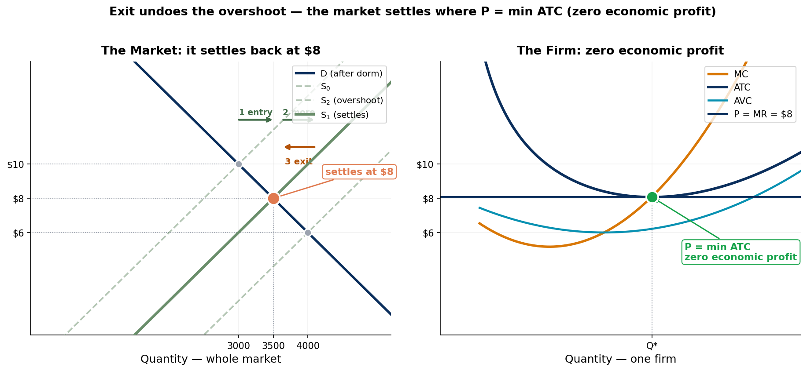
Losses force exit: supply contracts, price climbs back from \$6 to \$8. The dance ends where it must — P = min ATC, every surviving firm earning exactly zero economic profit.
Walkthrough 10.4 — Long-Run Exit at \(p < \min LRATC\)
Problem
Price sits persistently below the knife-edge. Find long-run profit and the exit decision.
Given
\(p = \$80\)/kWh · \(\min LRATC = \$82.81\)
CRS, so \(LRATC\) is constant in \(q\)
① The per-unit margin
\(\pi^{LR}(q) = (p - \min LRATC)\,q\)
\(80 - 82.81 =\) \(-\$2.81\)/kWh
② So how much to produce?
At the plant anchor \(q=32\): loss \(=-2.81\times 32\)
\(=-\$89.92\)M/yr
Loss grows with \(q\), so the best response is \(q=0\) — exit.
③ It self-corrects
As firms exit, market quantity falls and price rises back up the demand curve toward \$82.81.
\(p=\$80\) is a transient, not an equilibrium.
Why is there no "operate at a loss" band here? In the short run, fixed cost is sunk, so a firm keeps producing over the range \(\min AVC \leq p < \min ATC\) (Ch 9). In the long run every cost is avoidable, so that band disappears and the decision is binary.
Takeaway. Under CRS, LR exit is automatic whenever \(p<\min LRATC\): \(p\geq\min LRATC\) → operate; \(p<\min LRATC\) → exit. Free entry and exit force \(p=\min LRATC\) exactly.
Long-Run Adjustment Is Slow — and the Industry Is Concentrated
Heads Up 10.3
The model is a steady state, not a transition-speed claim. The 30→50 firm adjustment takes years — gigafactories need 2–4 years from announcement to operation (financing, permits, equipment, hiring, the learning curve). Real industries spend years or decades in long-run adjustment.
In 2024–2026 the industry has ~30–40 plants and a price ~\$84, with both entry (CATL Hungary, LGES Arizona) and exit (Northvolt, SVOLT, FREYR) ongoing — observably in adjustment.
Theory and Data 10.1 — how concentrated? (share indices)
2025 EV-battery shares: CATL 39.2%, BYD 16.4%, LGES 9.2%, … → \(HHI \approx 2{,}000\) (moderately concentrated), \(CR_4 \approx 70\%\).
How long? (firm counts — this chapter's \(N\))
US commercial banks: ~14,400 (early 1980s) → ~4,500 today. Airlines: deregulated 1978, then consolidated for three decades.
These are counts of \(N\), not concentration indices — they measure how slowly \(N\) moves, which is the Heads Up's point. Both margins moved for banks, but they are different measurements.
"Zero Profit" Doesn't Mean the 10-K Shows Zero
Heads Up 10.5
Zero economic profit ≠ zero accounting profit. Economic cost includes the opportunity cost of capital — for the gigafactory, \(r\bar K = 0.13\times 4 = \$0.52\)B/yr the firm could earn elsewhere.
A firm at LR equilibrium with zero economic profit still shows positive accounting profit \(\approx r\bar K\) on its 10-K. The two differ by the foregone return on equity capital.
Recall from Principles — 1116 §10.5
In Principles, "Long-Run Equilibrium — The Invisible Hand at Work" told this graphically: free entry drives price down to the minimum of \(LRATC\), where the price line is tangent to the bottom of the U-shaped cost curve and economic profit is competed to zero.
Chapter 10 writes the same picture in algebra: \(p^{LR}=\min LRATC\), with \(N^*\) the equilibrating variable. Under CRS the firm output drops out and \(N^*\) does all the work.
§10.6
Long-Run Market Supply
Symmetric firms → flat; heterogeneous firms → upward-sloping + Ricardian rents
When Firms Differ, LR Supply Slopes Up
Symmetric firms → LR supply is horizontal at \(\min LRATC=\$82.81\): below it all firms exit, above it infinite entry. \(N^*\) adjusts at the flat price.
But real firms differ — management, technology vintage, input access, location. Let potential entrants have \(\min LRATC \sim F(c)\). At price \(p\), firms with cost \(\leq p\) enter:
\(Q^s_{LR}(p) = N_{\text{pot}}\,q^*\,F(p), \quad \frac{dQ^s_{LR}}{dp} = N_{\text{pot}}\,q^*\,F'(p) > 0\)
Infra-marginal firms (cost strictly below \(p\)) earn Ricardian rents \((p-\min LRATC_i)\cdot q^*\); the marginal firm earns zero. (Formalized by Melitz 2003.)
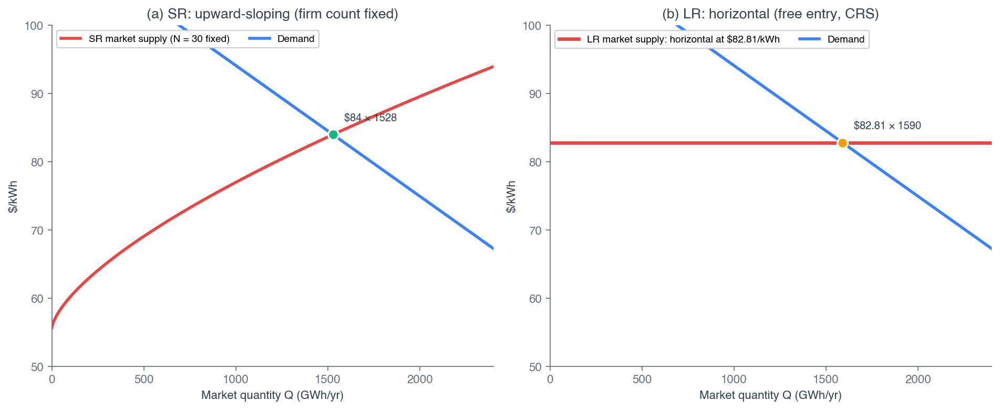
Fig 10.7 — SR supply (steep, \(N\) fixed) vs LR supply (flatter, entry/exit).
Walkthrough 10.5 — LR Supply with a Uniform Cost Distribution
Problem. 100 potential operators, each with \(\min LRATC\) drawn uniformly on \([\$80,\$90]\) — so the cost CDF is \(F(p)=(p-80)/10\). Each active firm produces \(q^*=32\) GWh. Find LR market supply on \([80,90]\).
Set up & solve
Active firms (those with cost \(\leq p\)): \(100\,F(p) = 10(p-80)\).
Market supply: \(Q^s_{LR}(p) = 10(p-80)\times 32 = 320(p-80)\) GWh.
Check the endpoints
At \(p=\$80\): \(Q^s_{LR}=0\) (no firm profitable yet). At \(p=\$90\): \(320\times 10 = 3{,}200\) GWh (all 100 operate).
Slope \(dQ^s_{LR}/dp = 320\) GWh per \$/kWh — entrants flow in at a constant rate as price climbs the cost distribution.
Takeaway. Heterogeneous costs → upward-sloping LR supply. A tighter cost distribution gives a steeper curve; a wider one flatter. The marginal firm earns zero; infra-marginal firms earn Ricardian rents.
Case Study — Starlink: When Free Entry Can't Happen
Different technology → dramatically different supply curves: a gas peaker's \(MC\) rises steeply, but Starlink's \(MC \approx 0\) makes its supply nearly flat. Push that to the limit — a huge fixed cost with \(MC \approx 0\) means \(LRATC\) keeps falling, so a second entrant can't survive and the market tips to a natural monopoly (Ch 11).
$10B
Sunk cost — satellites + rockets
10M
Subscribers (Feb 2026)

The rival's dilemma: a competitor also sinks ~$10B, then has to split the customers — neither firm covers its debt, so both go bankrupt. The math leaves room for exactly one firm — a natural monopoly.
Cost Differences & Economic Rent
In the long run a competitive industry earns no economic profit — but that clean result quietly assumes every firm has identical cost curves.
Real firms differ. More-efficient firms earn economic rent: a return to a specialized input above what the firm paid for it.
With different LR cost curves, price settles at the min ATC of the highest-cost (marginal) firm. That firm earns zero profit and zero producer surplus; every lower-cost firm pockets rent.
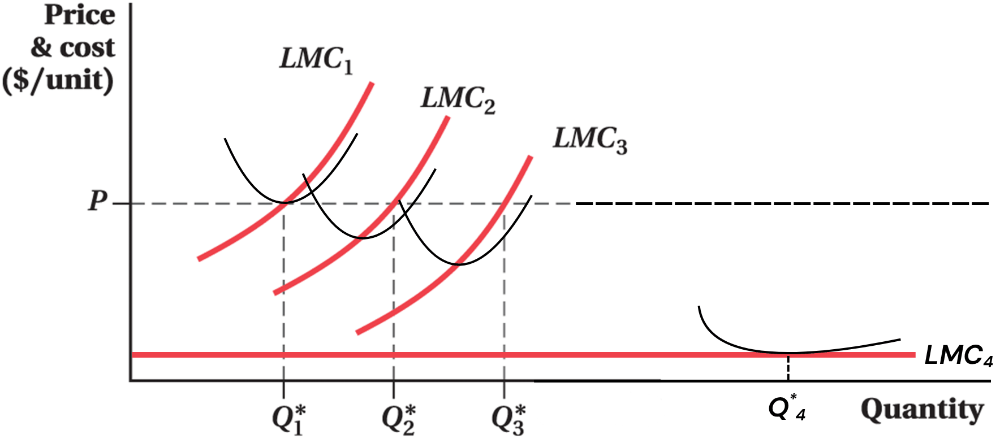
Heterogeneous firms (\(LMC_1\)–\(LMC_4\)). Each produces where \(LMC=P\); lower-cost firms earn rent (\(P\) above their min ATC), the marginal firm earns none.
Economic Rent ≠ Economic Profit
The most common mix-up in this section. A firm can pay large rents to its scarce inputs and still earn zero economic profit — because the rent is a cost, not a profit.
Economic rent
A return to a specialized input, counted inside that input's opportunity cost.
• An excellent manager or a trade secret would be valuable in other ventures too — that foregone value is a real cost.
• Rents accrue to the more-productive-than-average inputs (e.g., higher pay for the best managers).
Economic profit
What's left after subtracting all opportunity costs — including the rents paid to specialized inputs.
Free entry competes this to zero in the long run, even while rents persist.
Takeaway. Zero economic profit does not mean nobody is getting rich. Owners of scarce, productive inputs collect rents; the marginal firm, with no special input, collects nothing.
Application — Rents & Avocados from Mexico 🥑
The puzzle
Mexican avocado farming is ~perfectly competitive, yet Avocados From Mexico (AFM) advertises heavily. Why advertise in a zero-profit market? → to capture economic rents.
• Price is set by the marginal (highest-cost) grower; low-cost orchards earn rent from soil, climate, and location.
• Ads shift demand out → price ↑ → higher-cost growers enter → rent to low-cost orchards grows.
• Marginal orchards still earn zero profit; rents are capitalized into orchard land values.
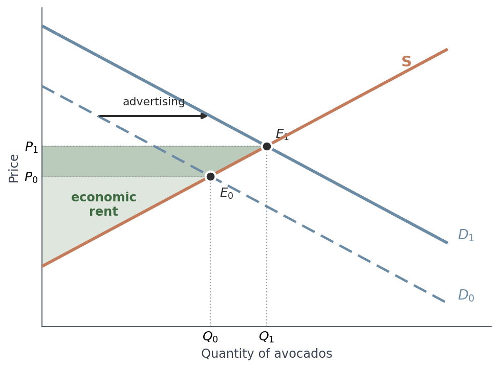
Advertising shifts demand \(D_0\!\to\!D_1\); price rises \(P_0\!\to\!P_1\) and the economic rent to low-cost orchards (green) expands.
Bottom line. Advertising can't manufacture economic profit in a competitive market — but it can grow the economic rents (and asset values) of the lowest-cost producers.
Application 10.3 — Freelance Platforms & the Cost Gap
Within a skill band, Upwork · Fiverr · Toptal approximate perfect competition — while the price gaps across regions expose the cost heterogeneity behind §10.6's upward-sloping LR supply.
Why it's ~competitive
• Services within a band are reasonably homogeneous.
• Hundreds of thousands of buyers and sellers.
• Prices update in real time — no single quote moves the rate.
Excess sellers → rate falls; high rates draw new sellers → rate adjusts back. Approximate price-taking.
27.7%
Fiverr take rate (FY2025)
3.1M
Fiverr active buyers (2025)
The cost gap, made visible (BNEF 2025)
Battery pack \$/kWh — China ~\$84; Europe ~56% higher (~\$131); North America ~44% higher (~\$121). Real cost heterogeneity, the engine of §10.6's upward-sloping LR supply and CATL's 39% share.
The take-rate wedge. The platform fee (10–28%) acts like a tax between buyers and sellers — a deadweight loss we formalize in §10.9. Freelance markets sit between cocoa (closest to competition) and branded goods.
§10.7
The First Welfare Theorem
Is the competitive equilibrium good? — \(TS(Q)=\int_0^Q [P^d-P^s]\,dq\)
Competitive Equilibrium Maximizes Total Surplus
Recall the surplus integrals from Ch 2. Total surplus is the sum — and the price cancels:
\[ TS(Q) = \int_0^Q [P^d(q) - P^s(q)]\,dq \]
The integrand is positive for \(q < Q^*\) (demand price exceeds supply price — a mutually beneficial trade) and negative for \(q > Q^*\). So \(TS\) rises until \(Q^*\) and falls after. The maximum is at \(Q^*\). That's the proof.
Heads Up 10.4
The theorem is an equilibrium statement: if the market reaches the competitive equilibrium, total surplus is maximal. It says nothing about how fast, or about fairness, equality, or sustainability.
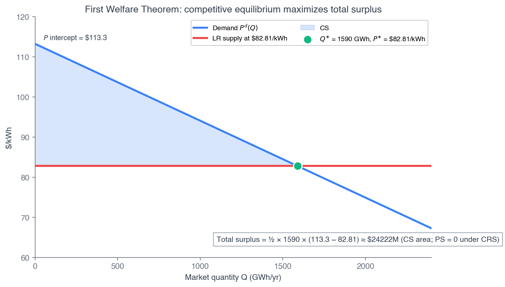
Fig 10.6 — CS + PS, maximized at \(Q^*\).
Calculus Corner 10.3 — The Proof in Two Derivatives
Differentiate \(TS(Q) = \int_0^Q [P^d-P^s]\,dq\):
\[ \frac{dTS}{dQ} = P^d(Q) - P^s(Q) \]
FOC: \(\dfrac{dTS}{dQ}=0 \iff P^d(Q^*)=P^s(Q^*)\) — exactly the competitive equilibrium.
\[ \frac{d^2 TS}{dQ^2} = \underbrace{\tfrac{dP^d}{dQ}}_{<0} - \underbrace{\tfrac{dP^s}{dQ}}_{>0} < 0 \]
SOC negative → \(Q^*\) is a maximum.
The calculus says the same thing as the geometry: the competitive quantity is where inverse demand meets inverse supply, and the second-order condition confirms it's a peak, not a trough.
We've now seen these surplus integrals three times: Ch 2 introduced them, Ch 3 used them for tax DWL, and Ch 10 uses them to prove the competitive \(Q^*\) is optimal, not just consistent.
The argument generalizes: any well-behaved S&D system (demand down, supply up) has a competitive equilibrium that maximizes total surplus.
Two Efficiencies, Achieved Without a Planner
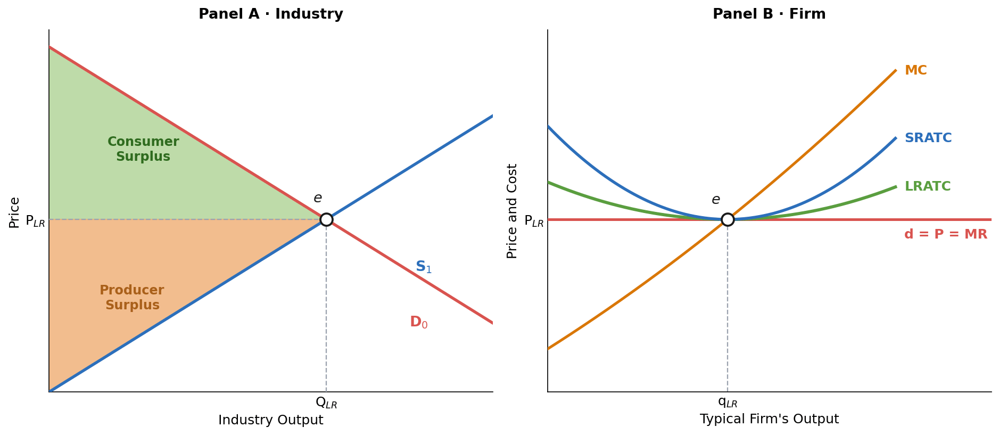
Panel A — surplus is maximized at \(e\). Panel B — the firm's flat demand is tangent to \(LRATC\) at its minimum. Drawn for the general U-shaped case; under CRS the tangency flattens into coincidence.
Productive efficiency — output is made at the lowest attainable unit cost, \(p = \min LRATC\). A firm carrying waste is undercut and exits.
Allocative efficiency — the price buyers pay equals the marginal cost of the last unit made, \(p = MC\). No mutually beneficial trade is left undone.
\(p = MR = MC = \min SRATC = \min LRATC\)
Zero profit is the feature, not the bug. Persistent positive profit means buyers are paying above cost; persistent losses mean producers are subsidizing buyers. Zero economic profit is the only resting point where price equals true opportunity cost.
Walkthrough 10.6 — Welfare Theorem on the Locked Egg Market
Problem. Locked Ch 2 linear market: \(Q^d=200-5P\), \(Q^s=50+10P\) (\(P\) in \$/dozen, \(Q\) in M dozens/wk). Verify the competitive equilibrium maximizes total surplus.
Set up & solve
Equilibrium: \(200-5P=50+10P \Rightarrow P^*=\$10\), \(Q^*=150\). Inverse curves: \(P^d=40-0.2Q\), \(P^s=0.1Q-5\). Integrand: \(45-0.3q\).
\(TS(Q)=\int_0^Q(45-0.3q)\,dq = 45Q-0.15Q^2\). FOC: \(45-0.3Q=0 \Rightarrow Q^{TS}=150\). SOC \(=-0.3<0\) ✓.
Check the pieces add up
\(TS(150)=45(150)-0.15(150)^2 = 6{,}750-3{,}375 = \$3{,}375\)M/wk.
\(CS=\tfrac12(40-10)(150)=\$2{,}250\); \(PS=\tfrac12(10-(-5))(150)=\$1{,}125\). Sum \(=\$3{,}375\)M ✓.
Takeaway. The competitive \((\$10, 150)\) hits the surplus peak. Any departure — floor, tax, monopoly — produces deadweight loss. Next: a price floor that does exactly that.
Producer Surplus for a Competitive Firm
Marginal cost slopes upward, so some output is sold at a price above its cost of production. Producer surplus is the sum of the gaps between price and marginal cost over every unit produced.
Two equivalent views, shown below: sum the per-unit \(P-MC\) markups (a), or read the same area as the \((P-AVC^*)\,Q^*\) rectangle (b).
\(PS = TR - VC\)
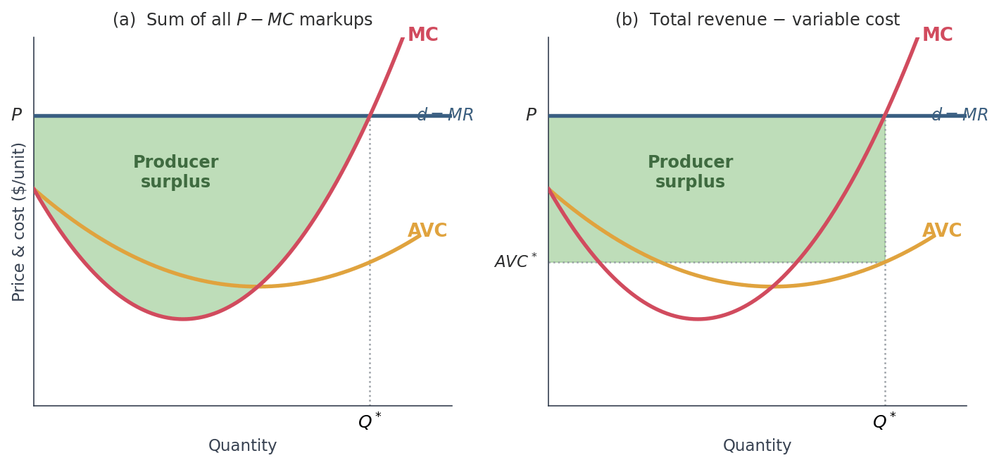
Producer surplus two ways — the area between \(P\) and \(MC\) equals the \((P-AVC^*)\,Q^*\) rectangle \(=TR-VC\).
Producer Surplus Is Not Profit — \(\pi = PS - FC\)
Producer surplus is closely related to profit — but they are not the same thing.
\(PS = TR - VC\)
\(\pi = TR - VC - FC = PS - FC\)
They differ by exactly fixed cost: PS ignores \(FC\) (sunk in the short run); profit subtracts it.
Producer surplus for a competitive industry
• Industry PS = the sum of every firm's surplus.
• In perfect competition the supply curve is the MC curve above min \(AVC\) — so industry PS is the area above supply, below price.
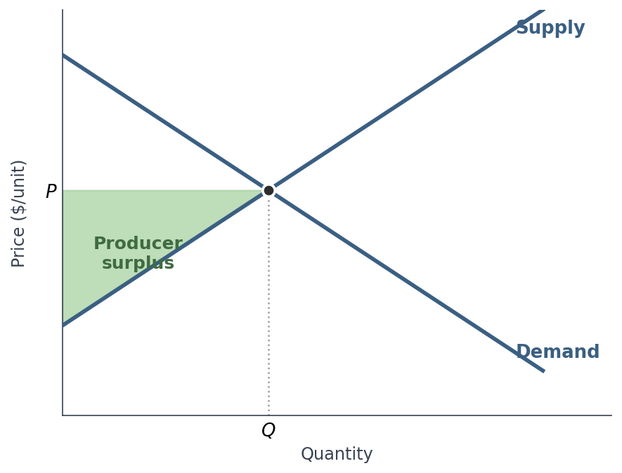
Industry PS — the area above the supply curve and below price, up to \(Q\).
Welfare Gains from Competitive Entry Are Real and Measurable
Recall from Principles — 1116 §5.3
Principles §5.3 told the efficiency story graphically: total surplus is the area between demand and supply up to \(Q^*\), maximized at the competitive quantity; any wedge leaves a triangular deadweight loss no one captures.
Chapter 10 writes the same statement as the integral identity. The triangle and the integral are the same claim in two languages.
Theory and Data 10.2 — three brackets on entry gains
- Atkin-Faber-González-Navarro (2018): Mexican retail liberalization → ~6% household welfare gain, largest for low-income households.
- EU Single Market (2025): at least 3–4 ppts of EU GDP.
- Goldberg et al. (2010): Indian trade liberalization → large gains via product variety.
A 6%-of-income welfare gain across an economy is comparable to several years of typical productivity growth — the competitive benchmark isn't a blackboard abstraction.
§10.8
Long-Run Adjustment
Entry and exit carry a competitive market from one long-run equilibrium to the next
Adjustment to an Increase in Demand
Trace the move to a new long-run equilibrium after a shock. First: a viral pizza trend pushes demand out, \(D_1\!\to\!D_2\).
Short run (A): existing pizzerias earn positive economic profit because \(P > LRATC\) — price jumps to \(P_2\).
Long run (B): new pizzerias enter, supply shifts out \(S_1\!\to\!S_2\), and price falls back to min \(LRATC\) at \(P_1\).
Net: more firms, higher quantity, same price — profit competed back to zero.
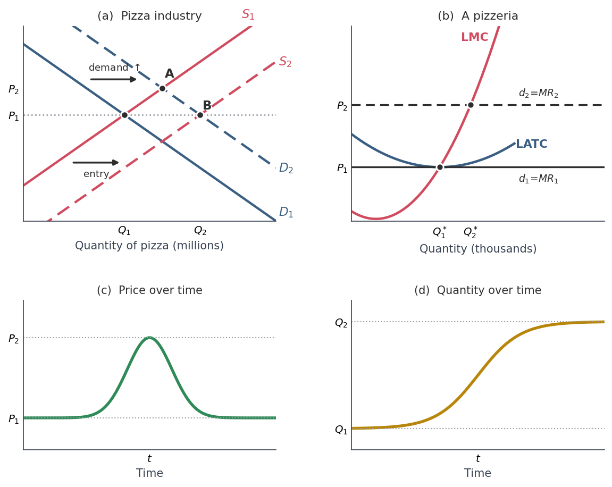
Adjustment to an Increase in Production Costs
Now costs rise — cheese, flour, wages, or rent climb — shifting supply up and in, \(S_1\!\to\!S_2\).
Short run: some pizzerias earn negative economic profit (\(P < LRATC\)).
Long run: those firms exit, supply shifts inward, and price rises until \(P\) equals the new, higher min \(LRATC\) at \(P_2\).
Net: fewer firms, lower quantity, higher price.
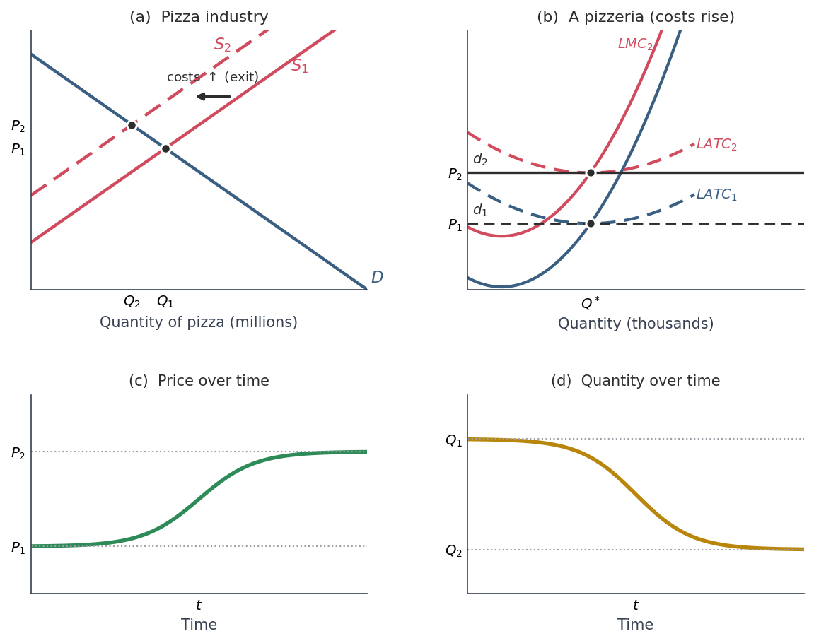
Capital Free Entry vs Biological Flock Rebuild
The 2022–2026 HPAI outbreak culled ~168M layers; retail eggs spiked from ~\$1.50–2.00 to \$4.95/dozen (Jan 2025). By March 2026, with the flock rebuilt to ~309M birds, prices fell back to \$2.35/dozen.
The binding LR factor here is biological, not financial. A pullet needs 18–20 weeks to lay — you cannot accelerate it with capital. Supply shifts back only as fast as farmers can hatch and raise replacements.
Theory and Data 10.3
Mitchell-Thompson-Malone (2024): HPAI raised weekly retail egg prices ~5.3% on average. Models ignoring flock recovery overstate CS losses 3–4× — losses concentrate in the recovery window.
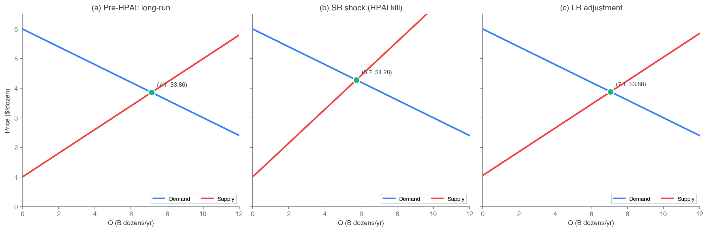
Fig 10.8 — HPAI supply shock and recovery in the egg market.
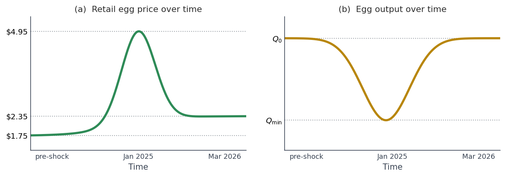
Because the shock is temporary, the price spikes then recedes and output dips then recovers — at the speed the flock can be rebuilt, not instantly.
Walkthrough 10.7 — HPAI Recovery via the Shifter \(\alpha\)
Problem. Demand \(Q^d=200-5P\); supply with recovery shifter \(Q^s(p,\alpha)=20+10p+\alpha\). Trace SR→LR adjustment as \(\alpha\) rises from 0 (full shock) through 15 (partial) to 30 (full recovery).
Set up & solve
Clearing: \(200-5P=20+10P+\alpha \Rightarrow P^*(\alpha)=(180-\alpha)/15\).
| \(\alpha\) | \(P^*\) | \(Q^*\) | State |
|---|---|---|---|
| 0 | \$12 | 140 | full shock |
| 15 | \$11 | 145 | partial |
| 30 | \$10 | 150 | pre-shock |
Check & interpret
Comparative statics: \(dP^*/d\alpha = -1/15\) (price falls as flock recovers); \(dQ^*/d\alpha = 1/3\) (quantity rises).
Full recovery (\(\alpha=30\)) returns supply to \(Q^s=50+10P\) — exactly the pre-shock equilibrium \((\$10, 150)\).
Takeaway. Adjustment runs through \(\alpha\) (the flock rebuild), not firm entry. No new firms needed — but the welfare theorem still holds at each instant: \(p=MC\), efficient given the current flock.
Long-Run Supply in Constant-, Increasing-, and Decreasing-Cost Industries
So far we assumed LR average cost is constant at every output level. In general, the slope of the long-run supply curve depends on what happens to firms' costs as the whole industry expands through entry.
Increasing-cost — LR average cost rises with industry output (competition over a scarce input, e.g., oil) ⇒ upward-sloped \(S_{LR}\) (Panel A).
Constant-cost — LR average cost is unchanged by industry output (the baseline so far) ⇒ horizontal \(S_{LR}\) (Panel B).
Decreasing-cost — LR average cost falls with industry output (industry-level increasing returns, or cheaper inputs) ⇒ downward-sloped \(S_{LR}\) (Panel C).

Demand rises \(D_0\!\to\!D_1\): the market jumps from \(a\) to \(b\) in the short run, then entry carries it to the new long-run equilibrium \(c\). \(S_{LR}\) joins \(a\) and \(c\).
§10.9
When the Welfare Theorem Fails
A binding price floor — a preview of all of Part IV & V
Walkthrough 10.8 — A Binding Price Floor on Eggs
Problem. Locked egg market \((P^*, Q^*)=(\$10, 150)\). Government sets a floor \(P_{\text{floor}}=\$12\)/dozen. Find quantity traded, deadweight loss, and the change in CS and PS.
Set up & solve
\(P_{\text{floor}}=12>P^*=10\): binding. \(Q^s(12)=170\), \(Q^d(12)=140\). Trade is the short side: \(Q_{\text{traded}}=140\), with 30 of excess supply.
Supply price at \(Q=140\): \(P^s(140)=0.1(140)-5=\$9\). Wedge \(=12-9=\$3\). \(DWL=\tfrac12(3)(150-140)=\$15\)M/wk.
Check the surplus split
\(CS: \$2{,}250 \to \$1{,}960\) (\(-\$290\)). \(PS: \$1{,}125 \to \$1{,}400\) (\(+\$275\)) on traded units.
Net: \(-290 + 275 = -\$15\)M/wk — matches the DWL ✓. \(TS: \$3{,}375 \to \$3{,}360\) (\(-0.4\%\)).
Takeaway. The floor transfers surplus buyers→sellers and destroys \$15M. This is the template for every failure ahead: monopoly (Ch 11), externalities (Ch 17), public goods & asymmetric info (Chs 16, 18).
§10.10 — A Note on Léon Walras (1834–1910)
Adam Smith described the "invisible hand" as a metaphor in 1776. Walras's 1874 Éléments d'économie politique pure made it rigorous: a general-equilibrium system of simultaneous equations with a single price vector that clears every market at once.
To explain how a market finds it without central direction, he invented the tâtonnement ("groping"): a hypothetical auctioneer raises prices where there's excess demand, lowers them where there's excess supply, and trade happens only at the clearing vector.
§10.7's welfare-theorem proof is partial equilibrium — one market at a time. Walras's framework extends the same logic to all markets simultaneously.
Walras didn't fully prove existence or uniqueness — those awaited Arrow & Debreu (1954), who used separating-hyperplane theorems to establish both welfare theorems rigorously. But Walras saw the structure first.
The Second Welfare Theorem (any Pareto-efficient allocation can be supported by some competitive equilibrium with appropriate redistribution) is the formal modern statement. Both are graduate-level — Walras pointed at them in 1874.
Economist at Work — Vernon Smith, 1962
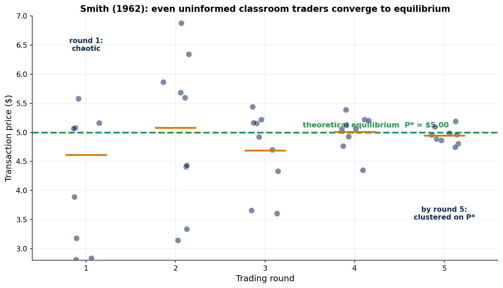
Walras's tâtonnement was a thought experiment. Smith ran it. Index cards handed each buyer a private maximum and each seller a private minimum — nobody could see the aggregate curves — and then he opened a double oral auction.
He expected it to fail. The theory assumes many traders and good information; he had a classroom and neither. Instead prices converged to the theoretical equilibrium within about five rounds, with only a handful of traders per side.
Convergence to \(p^*\) is not something the model needs handed to it — it is an experimental finding. Launched experimental economics; Nobel Prize, 2002.
Chapter Summary
Four conditions
Many small firms, homogeneous product, free entry/exit, perfect info — a benchmark, not a literal description.
Market supply
Horizontal sum \(Q^s=\sum_i q_i^*\); symmetric → \(N q^*\); elasticity unchanged by \(N\).
LR free entry ★
\(p^{LR}=\min LRATC=\$82.81\); \(N^*=Q^d/q^*=1{,}590/32\approx 50\). Resolves the CRS knife-edge.
Welfare theorem
\(TS=\int_0^Q[P^d-P^s]dq\), maximized at \(Q^*\). Competitive equilibrium is efficient.
Heterogeneity & biology
Cost spread → upward-sloping LR supply + Ricardian rents. Eggs adjust biologically (18–20 wk pullets).
Failure preview
A price floor breaks efficiency (\(DWL=\$15\)M) — the template for Chs 11, 16, 17, 18.
Why \$82.81? Because free entry pins \(p^{LR}=\min LRATC\). The gigafactory thread retires here: the \$84 we locked in Ch 9 is now endogenous, and the world needs \(N^*=50\) gigafactory-equivalents.
Coming Up — Chapter 11: Monopoly
Today the firm was a price taker with \(\partial p/\partial q = 0\). Chapter 11 flips the single assumption that drives everything about market power.
\(\dfrac{\partial p}{\partial q} < 0 \;\Rightarrow\; MR = p + \dfrac{\partial p}{\partial q}\,q < p \;\Rightarrow\; MR = MC \text{ at } Q_m < Q^*\)
- Marginal revenue below price: the monopolist's output drives price down along demand.
- The Lerner index: \((P-MC)/P = -1/\varepsilon\) — markup as the inverse of elasticity.
- Deadweight loss returns: \(Q_m < Q^*\), so the welfare theorem fails — the price floor of §10.9, but chosen by the firm.
Before next class: read manuscript §11.1–§11.3. Today's competitive equilibrium is the benchmark every later chapter measures against.
Questions?
Dr. Richeng Piao · ECON 2316 · Chapter 10